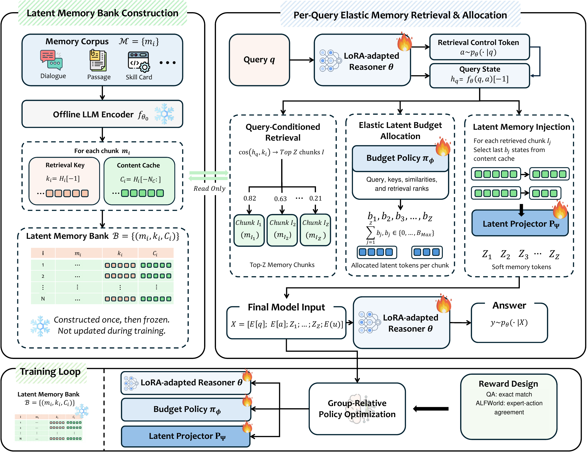
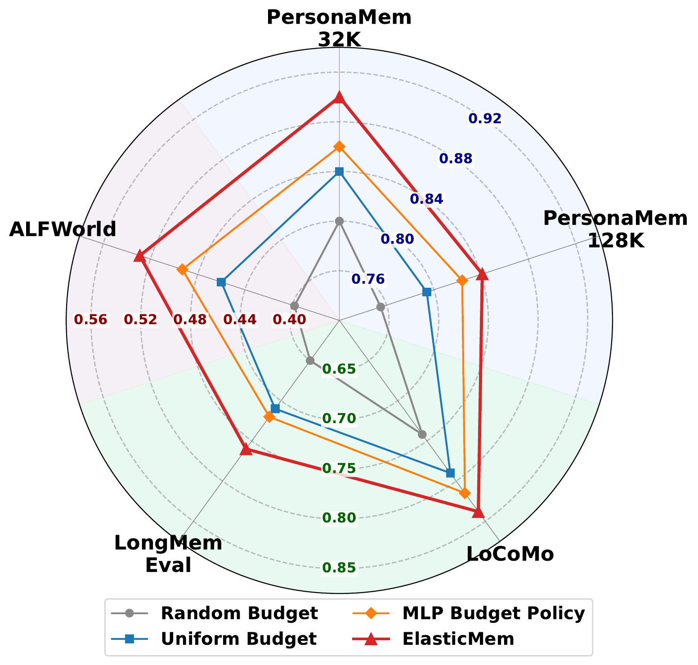
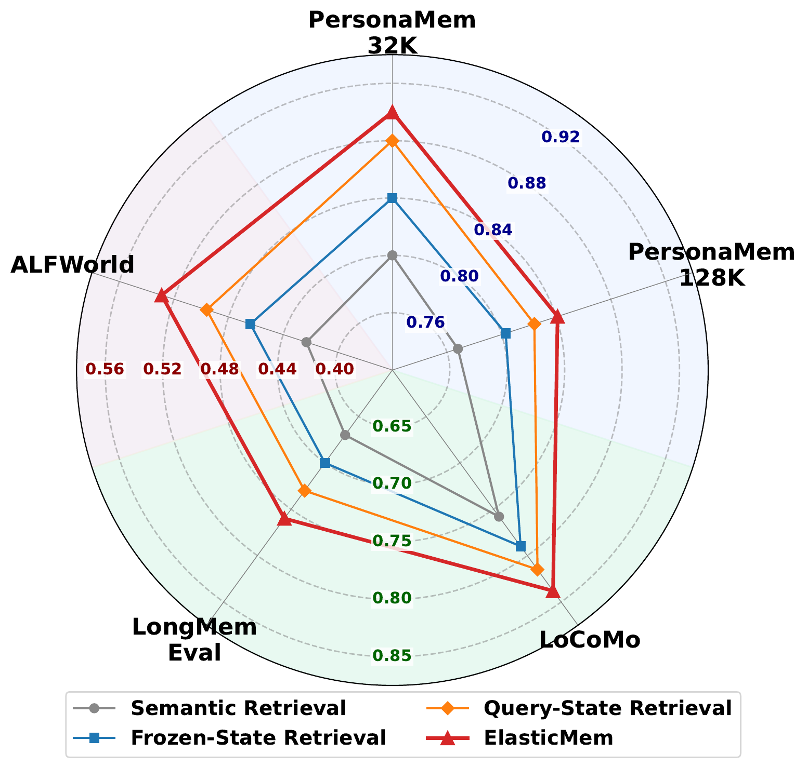
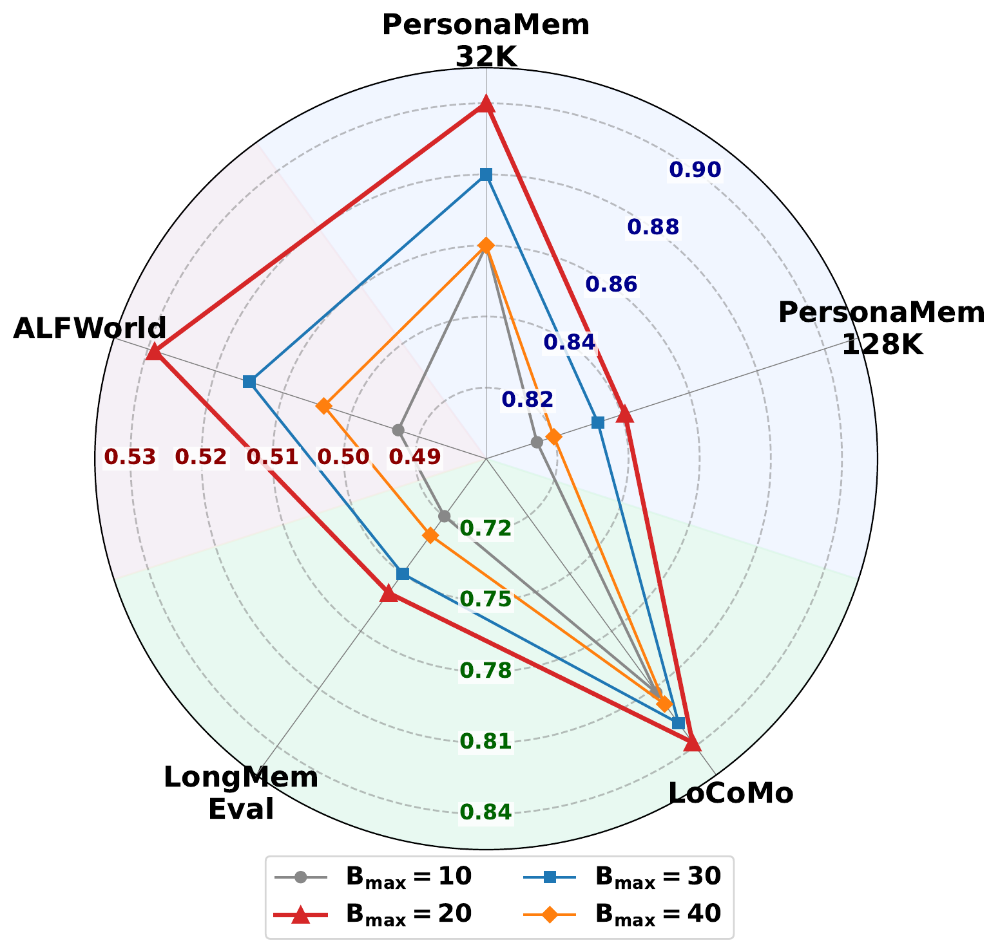

Abstract
Long-term memory is essential for LLM agents to reason coherently across extended interactions, personalize responses, and reuse past experience. Existing memory-augmented methods typically treat memory as a fixed resource: text-space approaches concatenate retrieved memories into the context window, causing substantial token overhead and sensitivity to noisy evidence, while latent-space approaches reduce textual cost but still rely on rigid retrieval or fixed-capacity memory interfaces. This creates a mismatch between query-dependent memory utility and fixed memory allocation.
We propose ElasticMem, a memory-augmented LLM framework that learns to use memory as an elastic latent resource. ElasticMem builds an offline latent memory bank with retrieval keys and content caches, retrieves memories adaptively from the reasoner's hidden state, assigns each retrieved memory a variable latent budget through a learned policy, and injects selected latent states as soft memory tokens for generation. The full memory-use process is optimized with downstream task rewards through group-relative policy optimization.
On MemorySuite, covering memory-intensive QA and embodied agent control, ElasticMem improves weighted QA accuracy by 26.2% and 24.6%, and ALFWorld success rate by 66.3% and 27.2%, over the strongest baselines with Qwen2.5-3B-Instruct and Qwen2.5-7B-Instruct, while achieving the lowest weighted-average ALFWorld token consumption.
How It Works
Memories are encoded once into a frozen latent bank. At query time, the LoRA-adapted reasoner emits a retrieval-control token whose hidden state drives retrieval; a budget policy decides how many latent states each retrieved chunk contributes; and a projector turns those states into soft memory tokens. Reasoner, policy, and projector are trained jointly with GRPO on task reward.

Each chunk is encoded once by a frozen LLM: its last hidden state is the retrieval key, its last Nc states form the content cache. The bank is never updated during training.
The reasoner samples a retrieval-control token; the resulting hidden state is the query, so retrieval is learned with the task rather than fixed to an external encoder.
A Transformer policy reads the query state, keys, similarities, and earlier decisions, and gives each retrieved chunk a budget bj ∈ {0, …, Bmax}. Useful evidence gets more capacity; weak chunks are compressed or dropped.
The last bj cached states of each chunk are projected into soft memory tokens. Reward (exact match for QA, expert-action agreement for ALFWorld) trains reasoner, policy, and projector together.
Main Results
We compare against seven text-space memory methods (MemoryBank, A-MEM, LightMem, Mem0, MemoryOS, MemP, LangMem) and three latent-space methods (MemGen, AutoCompressor, M+), all on the same backbones. Latent-space baselines are retrained on each task's training split with the same supervision. Scores are means over five training seeds; bold marks the best and underline the second best within each backbone.
| Method | PersonaMem-32K | PersonaMem-128K | LoCoMo | LongMemEval | Avg. | |||||
|---|---|---|---|---|---|---|---|---|---|---|
| Acc. ↑ | #Tok. ↓ | Acc. ↑ | #Tok. ↓ | Acc. ↑ | #Tok. ↓ | Acc. ↑ | #Tok. ↓ | Acc. ↑ | #Tok. ↓ | |
| Qwen2.5-3B-Instruct | ||||||||||
| Text-space memory | ||||||||||
| MemoryBank | 0.50 | 2,473 | 0.33 | 4,618 | 0.41 | 2,202 | 0.29 | 9,591 | 0.37 | 4,089 |
| A-MEM | 0.48 | 4,899 | 0.38 | 3,530 | 0.39 | 3,348 | 0.45 | 15,625 | 0.40 | 5,282 |
| LightMem | 0.46 | 851 | 0.35 | 1,306 | 0.40 | 3,468 | 0.44 | 1,248 | 0.39 | 2,239 |
| Mem0 | 0.42 | 778 | 0.39 | 662 | 0.33 | 836 | 0.33 | 2,843 | 0.36 | 1,062 |
| MemoryOS | 0.48 | 4,419 | 0.32 | 9,440 | 0.33 | 4,420 | 0.40 | 13,854 | 0.35 | 7,452 |
| MemP | 0.42 | 12,002 | 0.38 | 29,567 | 0.26 | 5,140 | 0.41 | 26,571 | 0.33 | 16,873 |
| LangMem | 0.40 | 675 | 0.30 | 1,626 | 0.40 | 936 | 0.28 | 687 | 0.35 | 1,112 |
| Latent-space memory | ||||||||||
| MemGen | 0.62 | 502 | 0.58 | 393 | 0.60 | 198 | 0.55 | 242 | 0.59 | 291 |
| AutoCompressor | 0.48 | 717 | 0.45 | 1,127 | 0.47 | 234 | 0.44 | 998 | 0.46 | 677 |
| M+ | 0.56 | 447 | 0.52 | 350 | 0.54 | 154 | 0.50 | 198 | 0.53 | 247 |
| ElasticMem | 0.74 | 537 | 0.77 | 682 | 0.74 | 577 | 0.68 | 433 | 0.74 | 589 |
| Qwen2.5-7B-Instruct | ||||||||||
| Text-space memory | ||||||||||
| MemoryBank | 0.53 | 2,639 | 0.35 | 4,724 | 0.40 | 2,301 | 0.39 | 10,822 | 0.39 | 4,358 |
| A-MEM | 0.52 | 9,731 | 0.37 | 11,098 | 0.42 | 3,289 | 0.50 | 31,489 | 0.42 | 10,408 |
| LightMem | 0.52 | 864 | 0.33 | 1,228 | 0.41 | 3,702 | 0.53 | 939 | 0.41 | 2,275 |
| Mem0 | 0.54 | 794 | 0.39 | 676 | 0.38 | 921 | 0.48 | 3,202 | 0.41 | 1,157 |
| MemoryOS | 0.52 | 4,695 | 0.38 | 9,748 | 0.42 | 4,998 | 0.53 | 14,489 | 0.43 | 7,926 |
| MemP | 0.52 | 11,964 | 0.40 | 29,581 | 0.22 | 5,382 | 0.48 | 26,580 | 0.34 | 16,985 |
| LangMem | 0.68 | 1,359 | 0.42 | 3,097 | 0.35 | 1,478 | 0.42 | 781 | 0.41 | 1,911 |
| Latent-space memory | ||||||||||
| MemGen | 0.70 | 502 | 0.66 | 393 | 0.68 | 198 | 0.63 | 242 | 0.67 | 291 |
| AutoCompressor | 0.56 | 717 | 0.52 | 1,127 | 0.55 | 234 | 0.51 | 998 | 0.54 | 677 |
| M+ | 0.64 | 447 | 0.59 | 350 | 0.62 | 154 | 0.57 | 198 | 0.60 | 247 |
| ElasticMem | 0.90 | 483 | 0.84 | 557 | 0.84 | 362 | 0.76 | 410 | 0.83 | 443 |
| Method | ALF-Seen | ALF-Unseen | Avg. | |||
|---|---|---|---|---|---|---|
| SR ↑ | #Tok. ↓ | SR ↑ | #Tok. ↓ | SR ↑ | #Tok. ↓ | |
| Qwen2.5-3B-Instruct | ||||||
| Text-space memory | ||||||
| MemoryBank | 0.06 | 76,016 | 0.09 | 71,173 | 0.08 | 73,648 |
| A-MEM | 0.04 | 17,239 | 0.05 | 14,248 | 0.04 | 15,776 |
| LightMem | 0.14 | 13,252 | 0.17 | 12,617 | 0.15 | 12,941 |
| Mem0 | 0.14 | 43,055 | 0.12 | 43,677 | 0.13 | 43,359 |
| MemoryOS | 0.11 | 68,131 | 0.13 | 65,845 | 0.12 | 67,013 |
| MemP | 0.11 | 101,580 | 0.10 | 110,019 | 0.11 | 105,707 |
| LangMem | 0.20 | 12,276 | 0.11 | 12,449 | 0.15 | 12,361 |
| Latent-space memory | ||||||
| MemGen | 0.29 | 14,708 | 0.25 | 14,416 | 0.27 | 14,565 |
| AutoCompressor | 0.16 | 21,145 | 0.13 | 21,571 | 0.14 | 21,353 |
| M+ | 0.20 | 14,246 | 0.16 | 14,233 | 0.18 | 14,240 |
| ElasticMem | 0.49 | 11,028 | 0.41 | 12,846 | 0.45 | 11,917 |
| Qwen2.5-7B-Instruct | ||||||
| Text-space memory | ||||||
| MemoryBank | 0.11 | 36,602 | 0.19 | 39,385 | 0.15 | 37,963 |
| A-MEM | 0.06 | 29,543 | 0.09 | 29,531 | 0.07 | 29,537 |
| LightMem | 0.33 | 11,150 | 0.37 | 10,617 | 0.35 | 10,889 |
| Mem0 | 0.43 | 26,165 | 0.40 | 27,327 | 0.42 | 26,733 |
| MemoryOS | 0.38 | 60,129 | 0.40 | 50,238 | 0.39 | 55,292 |
| MemP | 0.24 | 143,768 | 0.22 | 115,492 | 0.23 | 129,940 |
| LangMem | 0.40 | 9,735 | 0.28 | 10,140 | 0.34 | 9,933 |
| Latent-space memory | ||||||
| MemGen | 0.39 | 12,933 | 0.34 | 13,551 | 0.36 | 13,235 |
| AutoCompressor | 0.24 | 19,875 | 0.20 | 19,317 | 0.22 | 19,602 |
| M+ | 0.32 | 12,520 | 0.28 | 13,382 | 0.30 | 12,942 |
| ElasticMem | 0.56 | 9,035 | 0.49 | 9,031 | 0.53 | 9,033 |
#Tok. counts task-text input, injected memory, and generated output. Avg. columns are weighted by test-set size.
ElasticMem is the best method on every split with both backbones. On ALFWorld it pairs the highest success rate with the lowest token consumption. On QA it uses far fewer tokens than text-space memory and somewhat more than MemGen and M+ (weighted 423 vs. 291 and 247), trading a modest token budget for a large accuracy gain.
Controlled Comparison
With Qwen2.5-7B-Instruct, all variants share data splits, source memory, retrieval count, training examples, and update count. Swapping SFT for GRPO and enlarging LoRA both help a text-memory model, but neither closes the gap to ElasticMem; replacing the learned projector with direct state injection also costs accuracy.
| Variant | Objective | LoCoMo Acc. | ALFWorld SR |
|---|---|---|---|
| LoRA + text memory | SFT | 0.599 | 0.380 |
| LoRA + text memory | GRPO | 0.650 | 0.420 |
| Higher-rank LoRA + text memory | GRPO | 0.682 | 0.449 |
| ElasticMem with identity projector | GRPO | 0.739 | 0.460 |
| Full ElasticMem | GRPO | 0.841 | 0.529 |
ALFWorld SR is weighted over Seen and Unseen episodes.
Ablations
On Qwen2.5-7B-Instruct across all five settings, the learned Transformer budget policy beats random, uniform, and MLP allocation; retrieval from the control-token state beats semantic, frozen-state, and query-only retrieval; and a per-chunk cap of Bmax = 20 works best among 10–40.



Transfer. With learned components frozen, checkpoints trained on PersonaMem-128K or ALFWorld beat the corresponding MemGen checkpoints on LoCoMo and LongMemEval by 7.3–8.9 accuracy points; only the target memory bank is rebuilt. Llama-3.2-3B and Llama-3.1-8B runs also favor ElasticMem on both PersonaMem datasets.
@article{feng2026elasticmem,
title = {ElasticMem: Latent Memory as a Learnable Resource for LLM Agents},
author = {Feng, Tao and Ye, Chongrui and Yu, Fangxu and Luo, Tianyang and Xu, Jingjun and Xu, Xueqiang and Zhang, Haozhen and Zhang, Weizhi and Lei, Zijie and You, Jiaxuan},
journal = {arXiv preprint arXiv:2605.30690},
year = {2026}
}